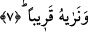

5. (Rasûlüm!) Şimdi sen güzelce sabret.
Ey Muhammed! Sakın feverân etme! Allah’tan başka hiç kimseye şikâyette bulunma!
Çünkü azap, meleklerin ve Cebrâil’in yükseklere çıktığı o uzun süre zarfında
gerçekleşecektir.
Hasan Basrî (r.a.)’ten rivâyet olunduğuna göre âyette yer alan “cemil”, zâhiren güzel
davranmak yâni; mücâmele etmek demektir. İbn Bahr’ın anladığına göre sabr-ı cemil
acele etmeden sıkıntının dağılmasını beklemektir. Buradaki ifâde yukarda geçen “istedi”
fiili ile alâkalıdır. Çünkü kâfirler azâbı, alay ettiklerinden, inatlarından ve vahyi inkâr
etmelerinden dolayı istemişlerdi. İşte bu durum Peygamber (s.a.) Efendimiz’i rahatsız
eden hususlardandı. Veya azâb, duyulan bu rahatsızlıktan, yardım ve zaferin gecikmiş
olmasından dolayı istenmişti.
6. Doğrusu onlar, o azâbı (ihtimalden) uzak görüyorlar.
“Şüphesiz onlar” Mekkeliler “bunu” bu gelecek azâbı, kendi görüşlerine göre “uzak
görüyorlar.” Bir başka ifâdeyle bu azâbı başkalarına havâle etmek yoluyla kendilerine
gelmeyecek düşüncesiyle kendilerinden uzak görürler. Nitekim onlar -Kur’ân’ın diliyle-
: “Sahi biz ölüp de bir toprak ve kemik yığını hâline gelmişken, mutlaka yeniden
diriltileceğiz öyle mi?” (el-Mü’minun, 23/82), “şu çürümüş kemikleri kim
diriltecek?” (Yasin, 36/78) diyorlardı. Bunun için o gelecek azâbın başlarına gelmesini
istiyorlardır. Bu kâfirlerin kendilerinden uzak görmelerinin sebebi, o azâbı hak
ettiklerini bilmeyişleri idi. Onların bu hâli, hasmından gelecek tehlikeyi reddeden ve
bunu imkânsız gören kimsenin ona, “bu uzak” demesine benziyordu.
7. Biz ise onu yakın görmekteyiz.
“Biz ise onu”, kâfirlerin, istîdâdlarına uygun olarak o azâbı hak ettiklerini bildiğimiz
için “yakın görmekteyiz.” Yâni bunun yakın olduğunu bilmekteyiz. Aynı şekilde bu azâb
bizim kudretimiz açısından kolaydır ve bunun gerçekleştirilmesi bize uzak değildir,
imkânsız da değildir. Bu iki âyette geçen “uzaklık”tan maksad imkân açısında uzaklık,
“yakınlık”tan maksad ise yine imkân açısından yakınlıktır.
Sehl (rh.) der ki: Onlar kendileri hakkında takdir buyurulmuş olan ölümü, yeniden